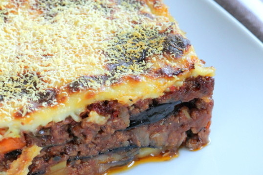
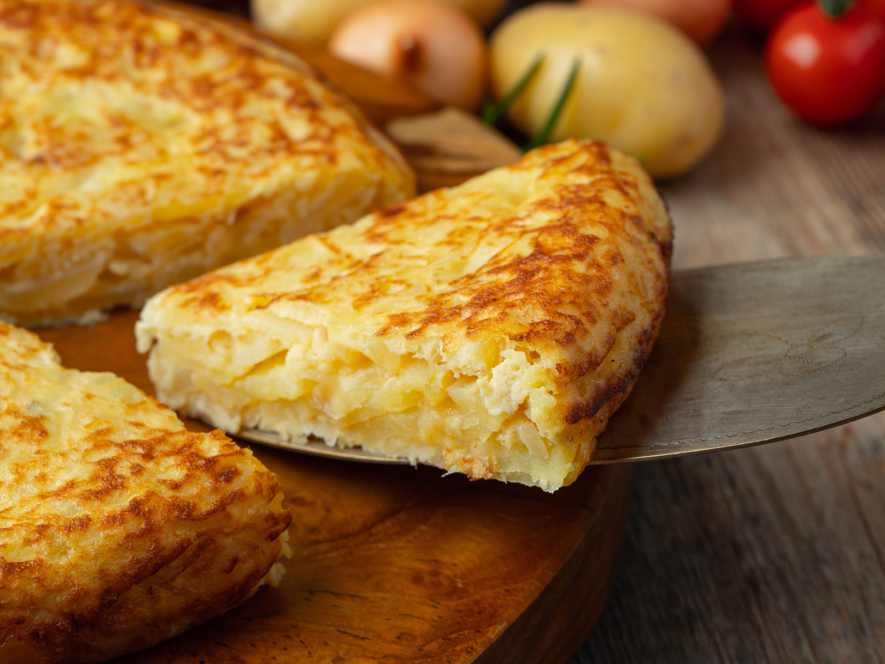
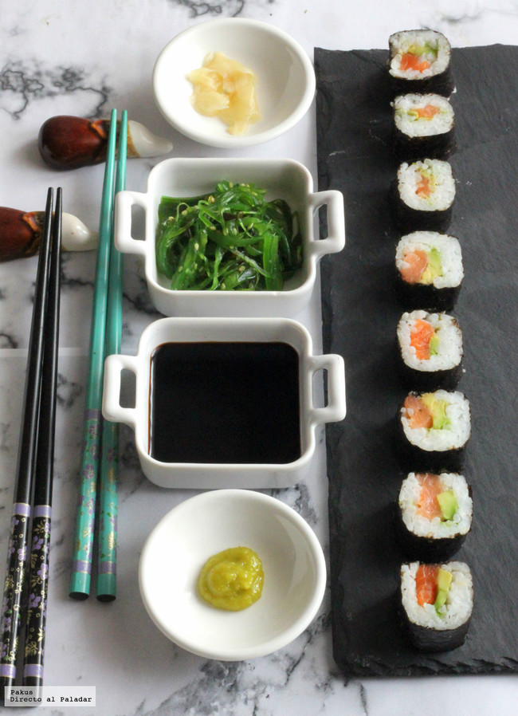
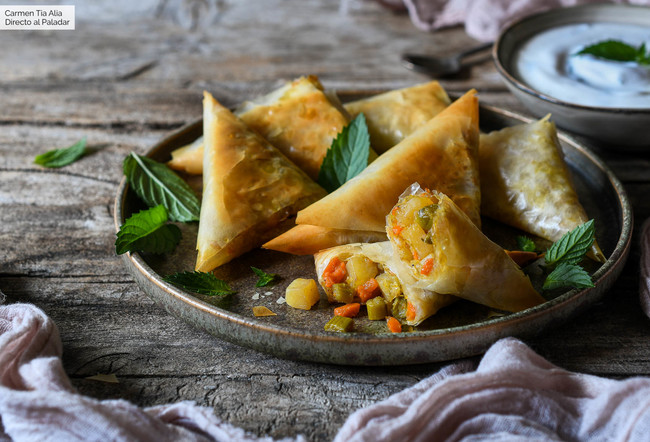

Comidas Tipicas
| # | País | Informacion | ingredientes | Imagen |
|---|---|---|---|---|
| 1 | Italia |
Spaghetti alla carbonara
Una de las comidas más típicas de Italia, especialmente en Roma y la región del Lacio, es el Spaghetti alla carbonara. Entonces, tienes que probarla y no te vas a arrepentir. Pero, ojo, la verdadera receta italiana no requiere tocino ni nata, así que busca la auténtica carbonara italiana cuando estés en el país. |
Para 4 Personas
|

|
| 2 | Grecia |
Musaka
Conocida popularmente como «lasaña de berenjenas», la musaka es uno de los platos griegos por excelencia. De acuerdo con la receta tradicional, la musaka se prepara con carne picada de cordero, rodajas de berenjena y cremosas capas de bechamel y queso. El resultado es esta comida típica de Grecia que también está presente en Oriente Medio. |
Para 6 personas
|
 |
| 3 | España |
Tortilla de patatas
Conocida fuera de nuestro país como ‘tortilla española’, este sencillo plato que mezcla simplemente patata frita con huevo batido y, según las preferencias del cocinero, cebolla, es un acierto seguro. Se trata de una elaboración que data del siglo XVI, y aunque su verdadero origen es incierto, la procedencia podría venir de las mezclas que hacían los aztecas con huevo y patata, introduciéndose en Europa como novedad a través de los colonos españoles. |
|
 |
| 4 | Japon |
Sushi
Preparar el sushi es un arte y lleva décadas convertirse en un verdadero maestro del sushi: puedes pasar años aprendiendo solamente cómo hacer bien el arroz. El mejor sushi lo puedes encontrar en Ginza (Tokio) y en los puertos pesqueros del país, pero también puedes ir a un kaiten-zushi, uno de los muchos restaurantes en los que lo sirven en un transportador de banda, que son más asequibles. |
|
 |
| 5 | India |
Samosas
Una especie de empanada con envoltura crujiente hecha de masa de harina de trigo muy fina. Se fríen en aceite o mantequilla clarificada (ghee). Rellenas de papas y verduras sazonadas con especias (puede tener más ingredientes). Se acompaña con salsa chutney (combina vinagre, azúcar y especias).
|
|
 |